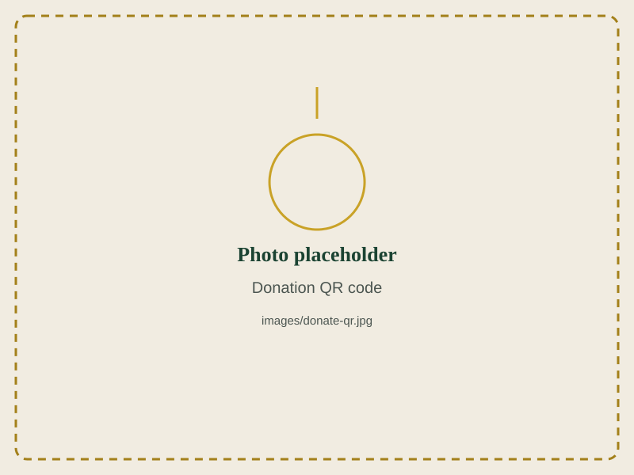

Support Canolfan Iman Centre
Your Zakat, Sadaqah, and donations keep our mosque open, our madrasa running, and our community support reaching families across North Wales.
README.md for exact steps.
Donate Online
Click below to make a secure online donation. (This button currently links nowhere — add your donation platform link in donate.html.)
Donate NowAccepted for: General Sadaqah, Zakat, Madrasa Fund, Building Fund, Ramadan Appeal.
Scan to Donate

Scan with your phone camera to go straight to our donation page.
Bank Transfer
[Site owner: add bank account name / sort code / account number, or remove this card if not offering bank transfer.]
Zakat
Calculate and pay your obligatory Zakat directly to support those in need in our community. Contact us if you'd like help calculating your Zakat.
In Person
Donation boxes are available at the centre at Glyn Y Marl Road — drop by any time during opening hours.
Where Your Donation Goes
Thank You for Your Generosity
Every contribution, however small, helps Canolfan Iman Centre continue serving North Wales.
Questions? Contact Us